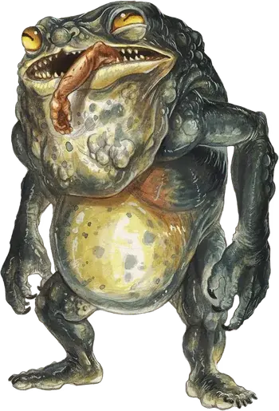

Бандерхобб
Banderhobb
Большой Монстр, нейтрально-злой

Класс Доспеха 15 (природный доспех)
Хиты 84 (8к10 + 40)
Скорость 30 футов
| мод | спас | ||
|---|---|---|---|
| СИЛ | 20 | +5 | +5 |
| ЛОВ | 12 | +1 | +1 |
| ТЕЛ | 20 | +5 | +5 |
| мод | спас | ||
|---|---|---|---|
| ИНТ | 11 | +0 | +0 |
| МДР | 14 | +2 | +2 |
| ХАР | 8 | −1 | −1 |
Навыки Атлетика +8, Скрытность +7
Иммунитет к состояниям очарование, испуг
Чувства тёмное зрение 120 футов, пассивное Восприятие 12
Языки Понимает Общий и языки своего создателя,но не говорит
Опасность 5 (1800 опыта)
Бонус мастерства +3
Среда обитания Город
Особенности
Резонансная связь. . Если у бандерхобба среди имущества есть хотя бы крошечный кусочек существа или предмета, например клок волос или щепка дерева, он знает наиболее прямой путь к этому существу или предмету, если те находятся в пределах 1 мили от бандерхобба.
Скрытность в тенях. . Находясь в тусклом освещении или во тьме, бандерхобб может совершить действие Засада бонусным действием.
Действия
Укус. . Рукопашная атака оружием: +8 к попаданию, досягаемость 5 футов, одна цель. Попадание: колющий урон 22 (5к6 + 5) и цель становится схваченной (Сл высвобождения 15) если размер существа Большой или меньше. Пока цель схвачена, она опутана, и бандерхобб сможет использовать свою атаку укусом или атаку языком на другое существо.
Язык. . Рукопашная атака оружием: +8 к попаданию, досягаемость 15 футов, одна цель. Попадание: урон некротической энергией 10 (3к6) и цель должна совершить спасбросок Силы Сл 15. В случае провала цель притягивается в пространство в пределах 5 футов от бандерхобба, и в этом случае он сможет воспользоваться бонусным действием, чтобы совершить против этой цели атаку укусом.
Проглатывание. . Бандерхобб совершает атаку укусом против схваченного существа Среднего или менее размера. Если атака успешна, существо проглатывается им, и захват оканчивается. Проглоченное существо ослеплено и опутано, получает полное укрытие от атак и прочих эффектов вне бандерхобба, а также получает урон некротической энергией 10 (3к6) в начале каждого хода бандерхобба. Существо, хиты которого таким образом опускаются до 0, перестает получать урон некротической энергией и становится стабилизированным.
Бандерхобб может проглотить, единовременно, не более одного существа. Пока бандерхобб дееспособен, он может изрыгнуть существо в любой момент (действия не требуется) в пространство в пределах 5 футов от себя. Если бандерхобб умирает, он изрыгает существо вышеописанным образом.
Шаг тени. . Бандерхобб магически телепортируется на расстояние до 30 футов в свободное пространство, которое он может видеть и находящееся в тусклом освещении или в темноте. Перед телепортацией или после нее, он может совершить атаку языком или укусом.
Описание
Бандерхоб – гибрид тени и плоти. Благодаря темной магии эти ингредиенты обретают форму огромной мерзкой человекоподобной двуногой жабы. В этой форме бандерхоббы временно служат своему создателю в качестве головореза, вора и похитителя.
Рожденный Каргами. В ранние дни мировой истории ковен ночных карг придумал ритуал, создавший первого бандерхоба. Карга, знающая ритуал, может научить ему за подходящую цену. Некоторые другие темные феи и могущественные изверги также знают этот процесс, как и несколько смертных магов. Инструкции могут также быть найдены в книге, посвящённой извращенному волшебству.
Бесшумные и смертоносные. Когда ритуал создания бандерхоба завершен, плоть, дух и тень соединяются в существо размером с огра. Только что сформировавшийся монстр имеет длинные и тонкие конечности, в которых скрывается огромная сила. В его широкой пасти длинный язык и ряд клыков, которые бандерхоб использует, чтобы схватить и проглотить существо или предмет, который он собирается украсть. Несмотря на размеры, бандерхоб производит мало шума, перемещаясь подобно тени, из которой он состоит. Бандерхоб не может говорить, но понимает приказы, данные ему создателем и общается с сородичами при помощи телепатии.
Агенты зла. Во время своего недолгого существования бандерхобы пытаются выполнять то, ради чего были рождены. Он доводит свою миссию до конца не беспокоясь о вреде, который он приносит или которому сам подвергнется. Его единственное желание — служить и добиться успеха. Бандерхоб, которому поручено разыскать цель, становится особенно эффективен, если ему предоставить локон волос, личную вещь или другой объект, связанный с разыскиваемым. Владение такой вещью позволяет ему ощущать местоположение существа на расстоянии вплоть до мили.
Бандерхоб выполняет свои обязанности до тех пор, пока не исчезнет. Когда это произойдет, обычно спустя несколько дней после рождения, он оставляет после себя только мазутоподобную жижу и обрывки теней. Легенды рассказывают о темной башне в Царстве теней, где тени иногда вновь сформировываются в бндерхобба, который начинает бродить вокруг.